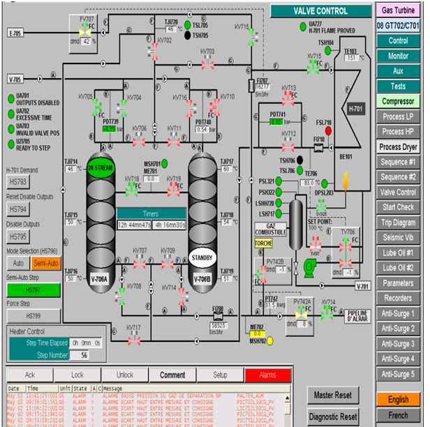

Procédure de démarrage de la station de compression
1. Démarrage des compresseur fixes d’air instrument (P air =4 - 4.5 bars)
2. Réarmement des commandes d’air des vannes XV (714, 715, 705, 708, 739, 730, 738, 701, 702, et 703)
3. Démarrage de l’extracteur FM-1
4. Mettre le commutateur pompe auxiliaire d’huile d’étanchéité / lubrification sur base (extérieur) en position auto.
5. Démarrage de la pompe auxiliaire d’huile (étanchéité / lubrification) avec la position manuelle en salle de contrôle (ordinateur)
6. Remplissage des ballons surélevés (HP & BP) d’huile d’étanchéité avec les vannes LV 760 & 763 commandées par les régulations LIC 760 / LIC 763 en Position manuelle (RAISE / LOWER) jusqu’ aux niveaux de consigne (set point 995 mm et 760 mm) et remise des régulateur en position automatique.
7. Ouverture des vannes inter-étage suivantes (by-pass manuel 2" / xv 706 – PDV 737 /xv 712 – PDV 756 / xv 711).
8. Maintien des points de consigne des régulateurs de pression (PIC 701 à 14.0 bar, PIC 703 à 4.0 bar et PIC 751 à 2.0 bar).
9. Ouverture des PDV d’entrées de gaz (PDV 712 – gaz MP, PDV 713 – gaz BP et PDV 716 – gaz HP).
10. Ouverture des vannes d’entrées XV – 701 – 702 & 703) après égalisation des pressions (amont et aval) et allumage des fenêtres PDT en (vert).
11. Ouverture de la vanne fuel gaz XV – 730 et maintien du point de consigne (set point) du PIC 738 à 17.2 bar.
12. Mise des commutateurs en position AUTO des pompes d’huile (lubrification / hydraulique) de GT 702. les pompes ne démarrent qu’après avoir lancé GT 702.
13. Mise des commutateurs de moteurs pressurisation et lancement GT – 702 en position AUTO.
14. Purge des corps compresseur C- 701 / 702, V – 708, circuit fuel gaz et ouverture de la vanne fuel gaz GT.
15. Vérification de l’ouverture du by – pass des sécheurs v 706 A / B.
16. Vérification du PRET au démarrage (START CHECK) des parties PROCESS & GT
17. Réarmement du moteur de lancement au niveau de la sous – station – électrique
18. Lancement de la GT en position (manuel), le set point HP = 99% et LP = 71.9 %.
19. Attente affichage de la fenêtre (ACCELERATION RAPIDE) lorsque la température d’huile lubrification des compresseurs C 701/ C702 TI – 763 atteindra 52 °C.
20. Réarmement (RESET) des vannes (anti – pompage) FV 701, 702, 703, 704 et 705.
21. Activer la fenêtre (ACCELERATION RAPIDE) à la température de 56 °C pour éviter une montée de vibration.
22. Remise pompe auxiliaire étanchéité / lubrification du C 701 / C 702 en position Off puis sur AUTO.
23. Remise du moteur de lancement sur OFF (base) et arrêt des compresseur d’air instrument.
Descriptions de S/C
Les stations de compression STAH/MRK sont conçues pour comprimer et déshydrater les gaz associés provenant des unités de séparation.
Les gaz provenant de unité de séparation STAH sont des différance pression que alimenté la station de compression.
En trouve gaz basse pression (BP~0.19bar) que rentre a la station a partir d’une vanne XV703
et le gaz d’un séparateur MP4 (~ 3.5bar) a partir d’une vanne XV701 et gaz Haut pression (HP ~11bar) a partir d’une vanne XV702 et ces vannes XV sont ouverte lorsque sont vannes PDV ouverte (PDV713 et PDV712 et PDV716) respectivement.
Avant l’entrée de chaque gaz vers la station de compression on trouve des vannes PCV qui gardent la pression dans l’unité de séparation et dévient le gaz vers la torche en cas déclanchement 1er ou 2eme group, PCV751 pour gaz Basse pression et PCV701 pour le gaz HP et PCV703 pour le gaz provenant du séparateur MP4.
Cette station comporte un compresseur (LP et HP) et une turbine qui donne l’énergie mécanique pour assurer la rotation de l’arbre de ce dernier, et des ballons avant chaque aspiration par compresseur, et les aéros réfrigérant, deux compresseurs d’air A et B pour alimenté les vannes si il y a un déclanchement, et un four qui chouffé le gaz de la régénération, deux sécheurs A et B en tamis moléculaire pour la déshydratation.
Le gaz déshydraté est expédié vers ALRAR C471 il subira un autre traitement afin de récupérer les condensats et le GPL qu’il contient au niveau du complexe de traitement.
La Lubrification
La lubrification ou le graissage est un ensemble de techniques permettant de réduire le frottement, l'usure entre deux éléments en contact et en mouvement l'un par rapport à l'autre. Elle permet souvent d'évacuer une partie de l'énergie thermique engendrée par ce frottement, ainsi que d'éviter la corrosion, régler avec la vanne PCV770 vers la lubrification des paliers compresseur BP et HP et l’engrenage.
Huile de barrage :
L’huile nécessitée pour l’alimentation des garnitures d’étanchéité passe par les vannes de réglage de niveau LCV763 et LCV760, la différence de pression, capable de maintenir la barrière d’huile de barrage, est produite par la hauteur statique de 7 mètres des réservoirs surélevés.
Proces LP de la station
Le gaz provenant de unité de séparation après la vanne PCV702 est basse pression (BP~0.19bar) qui rentre a la station a partir d’une vanne XV703 vers ballon V701 ce qui traduire une capacité nécessaire pour l’aspiration de compresseur C-701 et refouler avec pression (~1.3bar) vers l’aéro E707/1 qui va diminue sa température avant l’entré dans un deuxième ballon V702, donc nous avons une capacité dans ce ballon pour l’aspiration deuxième étage de compresseur C-701.
Si le débit n’est pas suffisant donc la vanne de débit FV702 Commence à s’ouvrir, même pour la 1er aspiration dans ballon V701, la vanne FV701 commence à s’ouvrir.
Afin d’éviter le phénomène de condensation suite à la réfrigération par l’aéro E707/1, la vanne de niveau LV706 s’ouvre pour évité totalement l’augmentation de niveau liquide dans le ballon qui entrainer le phénomène de pompage.
La deuxième aspiration avec une pression (~1.3bar) et refoulement deuxième étage (~3.4bar) vers l’aéro E707/2 avant l’entré dans le ballon V703 où en trouve une vanne entre-étage XV706.
Enfin, un dispositif de sécurité si il ya un problème nécessite de décompression à 0bar le compresseur LP C-701, la vanne XV705 ouvert vers l’atmosphère, et la vanne XV739 dévie le gaz rentre au ballon V701 vers l’atmosphère.
La vanne XV737 assurer présence débit dans l’aspiration 1er étage de C-701 et en peut fait le nettoyage avec ce gaz.
Proces HP de la station
Le dernière refoulement de C-701 de pression (~3.4bar) ce mélangé avec le gaz prévenant de séparateur MP4, et rentre au ballon V703 pour la 1er aspiration du C-702 (aspiration troisième étage de la compresseur), le refoulement (~11bar) vers les aéros E703, et après mélangé avec le gaz prévenant HP de unité de séparation et rentre au ballon V704 pour la deuxième aspiration du C-702, la vanne FV703 pour le recyclage vers le ballon V703 si il ya manque de débit d’aspiration.
Le refoulement dans ce cas est entra étage, mélangé avec le gaz prévenant de sécheur V706AouB en passant par aéro E705, et la vanne entre étage XV712, et le ballon V707 avec pression (~29bar), et donc refoulement final (~38bar) de C-702 vers la dernière étape, c’est le séchage avec deux sécheurs V706A et V706B, en passant par aéro E704, et la vanne entre étage XV711, et le ballon V705.
Un picage dans le pipe de dernière refoulement vers le ballon V708, avec une pression régler à 17 bar par la vanne PCV738, ce gaz c’est un gaz combustible pour le turbin à gaz GT-702, et le four H-701, et aussi un gaz tampon ou gaz d’équilibrage de compresseur en passant par la vanne XV738.
Pondant le démarrage, ce gaz provenant HP de l’unité de séparation en passant par la vanne XV730.
Comme la proces LP en trouvant dans le dernier refoulement un dispositif de sécurité si il ya un problème nécessite de décompression à 0bar le compresseur HP C-702, la vanne XV708 ouvert vers l’atmosphère.
Séchage du gaz comprimé
Lors du séchage, le gaz comprimé s’écoule à travers l’un sécheur V706A/B en tamis moléculaire qui fait le phénomène d’adsorption pendant que l’autre sécheur V706A/B est en train de régénérer avec un gaz sec chaud.
Le four verticale cylindrique est assuré le chauffage de gaz sec et l’augmentation de la température dans le sécheur jusqu’à environ 260°c.
Le gaz de régénération est refroidi dans l’aéro(E-705), L’eau condensée et les hydrocarbures sont séparant dans le ballon V707.
Le gaz de régénération refroidi est envoyée pour recyclage au troisième étage de (C-702) en que circuit intermédiaire (~29bar).
Après la régénération en passant au refroidissement de sécheur, par le gaz sec et n’est pas chouffé.
Une fois le déshydratant refroidi, le sécheur passe en attente, pendant cette période, le circuit partiel utilisé pour refroidissement by passe complètement le système du sécheur et s’achemine directement vers (C-702).
